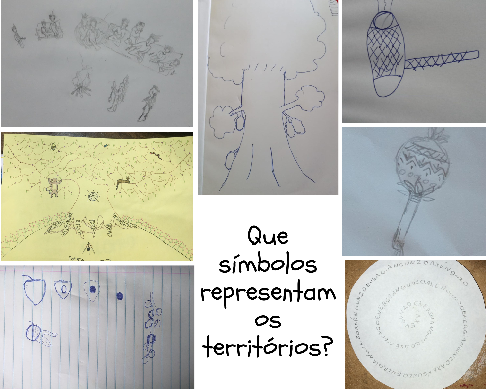
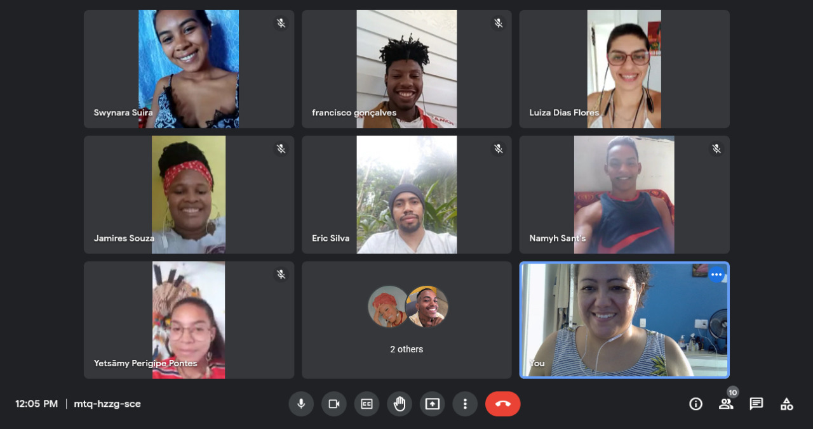
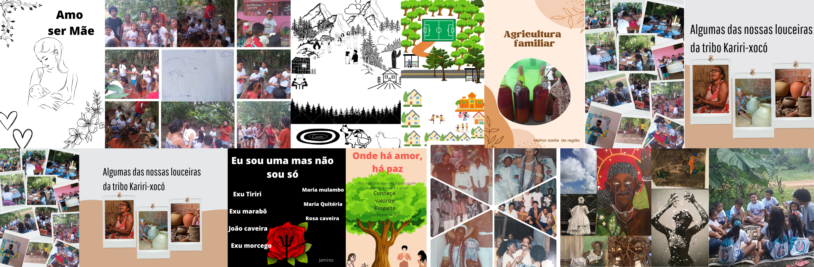
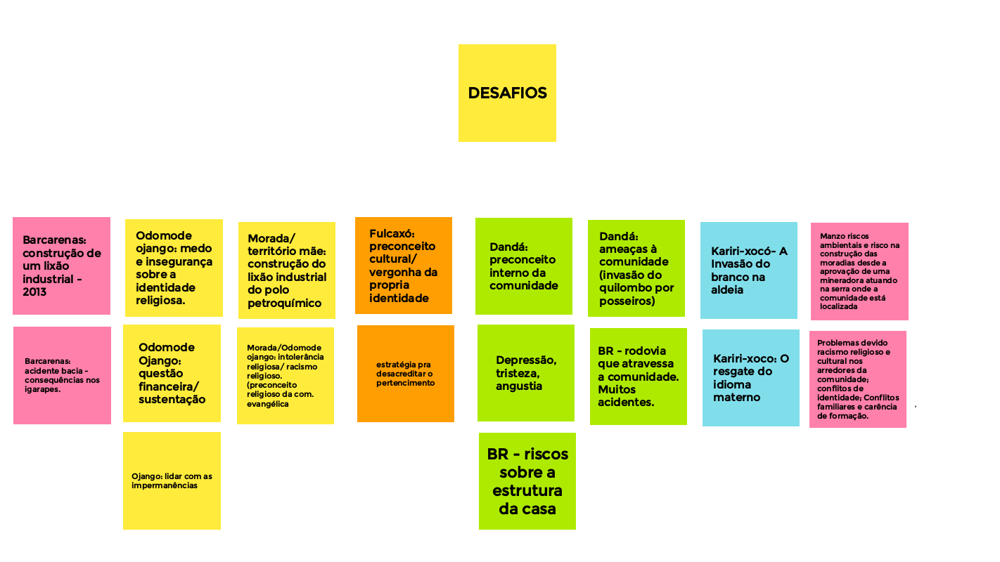
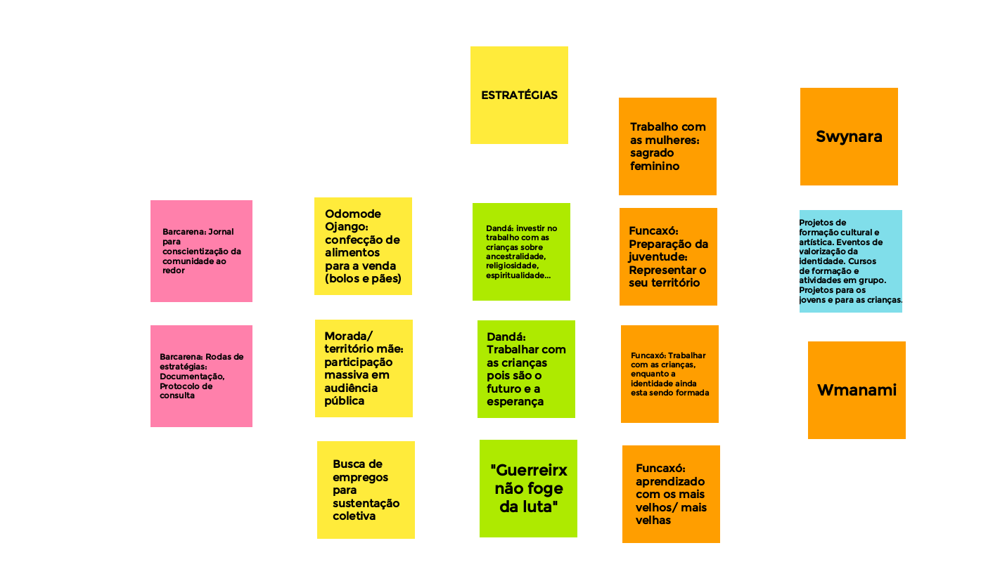

TECENDO A ESPERANÇA
Tecendo a Esperança A partir das parcerias entre Universidade Federal da Integração Latino-Americana (Unila), Universidade Federal do Amazonas (UFAM), Ciesas Sureste (México) e Multiversidade dos Povos da Terra, o Tecendo a esperança iniciou em 2021, com a proposta de consolidar diálogos entre distintas expressões de organização de caráter territorial e modos de vida que se desenvolvem na complexidade do mundo rural, mirando o seu fortalecimento comunitário e mobilizações em defesa dos territórios coletivos. Com a participação de lideranças de diferentes países latino americanos, debatemos, desde os lugares de existência de povos e comunidades afrodescendentes e indígenas localizados na Colômbia, México e Brasil, sobre suas estratégias de mobilização social e lutas pela manutenção de territórios, garantias socioambientais e direitos dos povos e comunidades tradicionais e campesinas, diante de um recrudescimento dos conflitos territoriais e socioambientais que colocam em risco suas existências. Efetivamente, uma série de encontros e eventos onlines abertos ocorreram, incluindo o Ciclo de debates Tecendo a esperança, que perpassa temas relacionados à proteção de territórios, cidadania e participação social com palestrantes oriundos de comunidades tradicionais e representações camponesas. O Ciclo teve uma primeira edição em maio de 2021, com o tema da atuação das mulheres em suas organizações e territórios, com Yashodhan Abya Yala (Brasil), da comunidade Kilombola Compaz Terreiro de Mãe Preta e Perla Alvarez (Paraguai), da Organización de Mujeres Campesinas e Indígenas (CONAMURI).
Em 2021 ocorreu a Mesa de debates “Conhecimentos contracoloniais e educação intercultural”, com a presença de Mako’ Yilè Yabacê, Representante da Multiversidade dos Povos da Terra (Brasil), Norma Bogado, Secretaria de Relações da organização Cultiva Paraguay e Armando Hernández González, Diretor e Coordenador da zona Altos do Instituto para el Desarrollo Sustentable en Mesoamérica (IDESMAC - México).
Ao longo de 2022, fomos tecendo o diálogo sobre as experiências que esses grupos têm criado a partir de mecanismos de auto sobrevivência que geram relações ecológicas de composição da vida com seres humanos e não-humanos dos distintos territórios, frequentemente ameaçados pela lógica de consumo do desenvolvimento econômico e também refletir sobre os instrumentos de garantia de direitos que têm sido acessados atualmente, bem como nas possibilidades de conexões parciais entre as diferentes experiências capazes de produzir fortalecimento mútuo. Esses encontros aconteceram virtualmente de março a julho, de 15 em 15 dias, totalizando 13 encontros. Organizados através de ipádès virtuais, os encontros foram guiados por perguntas-chaves e atividades lúdicas fomentadoras de trocas e reflexões coletivas.
Pergunta-chaves iniciais:
Quem somos?
O que esperar deste projeto?
O que é Tecer a esperança?
Representações dos territórios: Foi solicitado que cada um trouxesse um símbolo de cada território e o desenhasse em um papel. O que este símbolo significa? O que mostrar do território? Como mostrar? A partir de suas falas e desenhos, os jovens elaboraram palavras norteadoras derivadas dos símbolos escolhidos: unidade, identidade, história, sabedoria, comer juntos, conexão entre mundos, brincadeira, união – COMUNIDADE.

Que símbolos representam os territórios?

Cotidiano comunitário e juventude: Acolhimento da necessidade dos jovens de se conhecerem mais. Realizamos uma roda de conversa sobre hobbies, atividades, cotidianos de cada jovem em suas comunidades.
Memória e identidade: Solicitamos que trouxessem fotografias antigas das suas famílias e comunidade. Fizemos uma rodada de apresentação e contação de histórias. Perguntas-chave: o que é a memória? Por que lembrar? Do que lembrar? Qual a sua importância para a juventude?

Tecnologias digitais e ancestralidade: Apresentamos o Canva, aplicativo gratuito de edição de imagem e vídeo, como ferramenta para comunicação digital. Perguntas-chaves: como a tecnologia pode ser utilizada para o fortalecimento comunitário? Alguns encontros foram dedicados a discutir sobre a relação entre tecnologia e saberes ancestrais e apresentações dos experimentos feitos pelos jovens na plataforma Canva.


Direitos territoriais: Após as experimentações com o Canva, iniciamos a construção de um mural sobre o papel da juventude e a defesa dos territórios, através da plataforma Jamboard. Perguntas-chaves: quais os principais ataques sofridos aos territórios e quais as estratégias comunitárias de frente a esses ataques?
Conversa sobre Educomunicação: Apresentação da educadora popular Vânia Pierozan sobre educomunicação e início do planejamento para o montagen do site. Pergunta-chave: Como apresentar as comunidades através de fotos, textos, vídeos, áudios e outras mídias? Foi solicitado que pesquisassem referências de sites e temas que gostariam de abordar.
Em vias de finalização dos encontros virtuais, trabalhamos com a seguinte pergunta-chave: Qual o papel da juventude nas comunidades em contexto de inúmeros ataques territoriais? As reflexões dos jovens podem ser acompanhadas no link abaixo.
 Escute os conteúdos sonoros produzidos pelos
jovens.
Escute os conteúdos sonoros produzidos pelos
jovens.